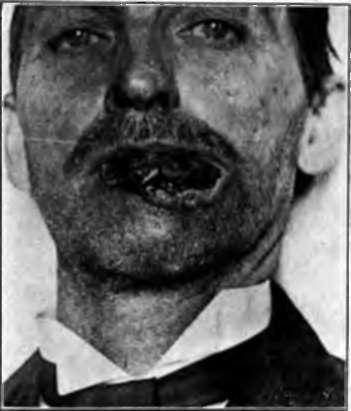
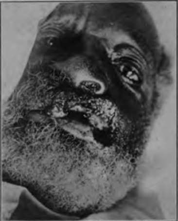

Treatment to Tumors of the Lips
Description
This section is from the book "Skin Cancer", by Henry H. Hazen, A.B., M.D.. Also available from Amazon: Skin Cancer.
Treatment to Tumors of the Lips
As has already been stated, excision of the growth with a good margin of healthy tissue and repair of the lip-in other words, the local operation-is a justifiable and harmless procedure, provided the glands are attacked at an early date should pathological findings make it necessary. Excision of a portion of the tumor or removal of a gland for diagnosis is quite another matter, and is practically never justifiable unless performed on the operating table, where the diagnosis can be made either from the gross appearance of the tissue or from a frozen section, and both the patient and operator prepared to immediately go ahead with the complete operation should it be necessary. It has been definitely proven that, if a cancer is cut into and left, the chances of subsequent cure are very much diminished. When a cancer is incised for diagnostic purposes, certain precautions are necessary to prevent dissemination of cancer cells. The cut surface of the tumor should be treated with pure carbolic acid, iodine, caustics, or the actual cautery, drawn together and covered with gauze. All instruments used in connection with the tumor should be boiled again, and towels and gloves changed before proceeding with the operation.
Fig. 82.- Prickle-celled cancer of the lower lip of fifteen years' duration. Note resemblance to a rodent ulcer, but also enlarged glands beneath chin. Cured for four years by radical operation. This case illustrates the difficulty of diagnosing the difference between basal- and prickle-celled cancer of the lips. (Heidlngsfeld's collection).
In advanced ulcerating cases of cancer it probably does no harm to remove a portion of the more superficial growth, if the vessels be scared with the actual cautery, but, in general, cutting into tumors for diagnostic purposes is to be strongly condemned.
Crile- emphasized an important fact when he stated that in a careful study of 4.500 cases of cancer of the head and neck, exclusive of the thyroid gland, less than 1 percent showed secondary cancer in distant organs and tissues. Death in these cases nearly always results from the local or regional development of the disease. This means that "the collar of lymphatics of the neck forms an extraordinary barrier through which cancer rarely penetrates. Every portion of the barrier is surgically accessible".
*Crlle: Jour. Amer. Med. Assn.. 1906. xlvii. 1780.
According to Poirier, Cuneo et Delamere,* the lymphatics draining the lips arc generally agreed to be the following. There is a small gland in the cheek situated well above the corner of the mouth, just above the fold of the cheek-one such gland on each side. Mention of this gland is not often found in the literature, but the author knows of two or three cases where it was personally demonstrated to' be involved by cancer, secondary to cancer of the upper lip.
Fig. 83.-Prickle-celled cancer of the upper lip. (Kerr and Hazen.-Courtesy of tin-Journal of Cutaneous Diseases).
The submental group lies in a triangle bounded by the anterior bellies of the digastric muscles and hyoid bone; this receives vessels from the chin and central portion of the lower lip.
The submaxillary group, consisting of five or six, or even more, glands, lies in the submaxillary triangle, between the bellies of the digastric muscles and the jaw, and drains the lower portion of the nose, the cheek, the upper lip, and the lateral portion of the lower lip. In the dissection of this group of glands the facial artery and vein should be ligated and divided, the submaxillary salivary gland should often be removed because of its close proximity to the lymphatic tissue, and Wharton's duct should be tied. Care should be taken not to injure the lingual and hypoglossal nerves, which cross the floor of this triangle. There is an anastomosis between the lymphatics which drain the-two sides of the lip and also with those from the central portion, and hence any blocking of regular drainage, whether by cancer or inflammation, may cause the lymph stream to flow in any direction. As a result it is best to remove the glands upon both sides at the same sitting.
* Poirier, Cuneo et Delamere: The Lymphatics. 1004.
The deep cervical group of lymph glands (Fig. 84), estimated to comprise from fifteen to thirty glands, extends from the tip of the mastoid and posterior belly of the digastric muscle to the junction of the internal jugular and subclavian veins. Some of these glands lie in front, but a larger number lie behind the internal jugular vein. This is a very important group in surgery of the lip, because it forms the second glandular relay for the area which drains the submental and submaxillary glands. Consequently, when the submaxillary glands are involved, it is necessary that the entire deep cervical group be removed.
The author believes that the ideal treatment of cancer, in general, requires that the primary growth, along with the lymphatics draining the part, should be removed in one piece; there should be no division of lymphatics. It is not, however, necessary in most cases of cancer of the lower lip for the incision for the removal of the glands of the neck to be continuous with the incision in the lip. Witness the cases where the operation upon the lip has been done independently of that on the neck, and no appearance of cancer in the lymph vessels, which lie between the primary growth on the lip and the first relay of glands in the neck, has become manifest. Beckman,* in his report of these cases from the Mayo clinic, states that he has not observed a cancer occurring in the lymphatic vessels between the original growth and the lymphatics of the neck, and that cancer of the lip is either a local growth or a metastasis in the adjacent glands. Because of the danger of infection from the buccal cavity, it is of great importance that the local excision and the operation on the neck should be independent, and that the latter be done first, although both should be performed at the same sitting.
Continue to:
Tags
bookdome.com, books, online, free, old, antique, new, read, browse, download